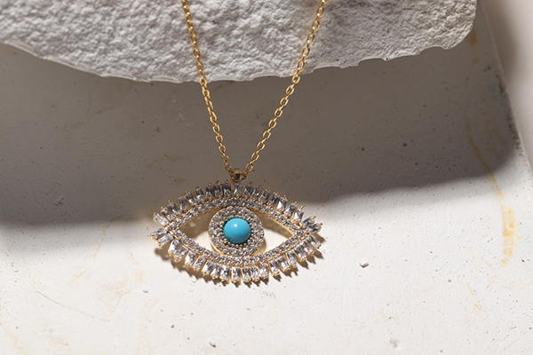

Gümüş takılar zarafetin ve şıklığın simgesi olarak her zaman popülerliğini korur. Ancak zamanla kararma ve parlaklığın kaybolması gibi sorunlarla karşılaşabilirsiniz. Neyse ki, doğru tekniklerle gümüş takılarınızı ilk günkü gibi parlak ve temiz tutmak mümkün! İşte, gümüş takı temizliği için etkili yöntemler ve öneriler:
